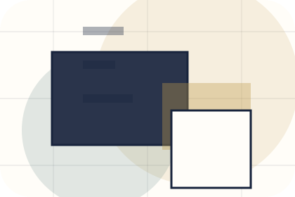
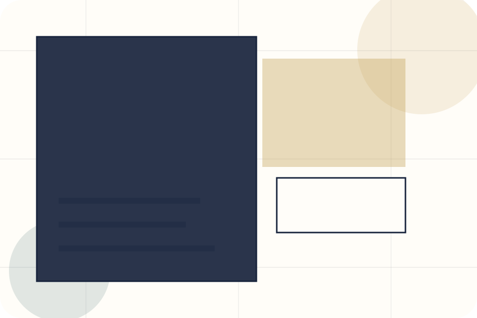
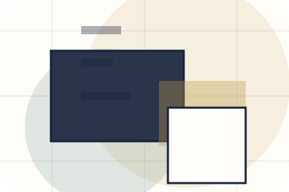
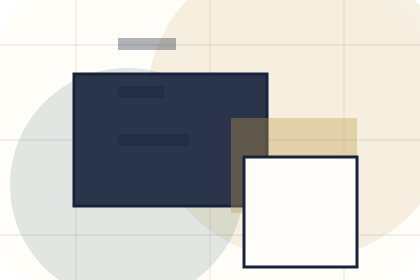
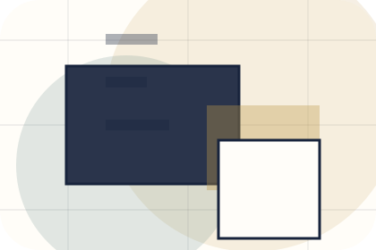
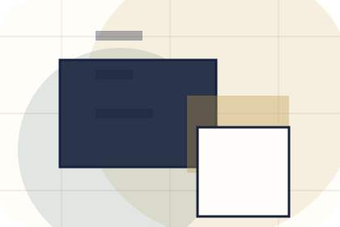
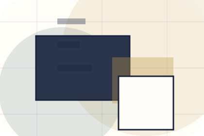
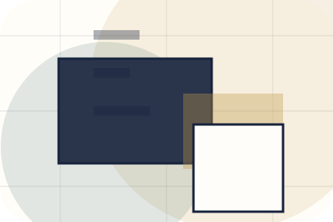
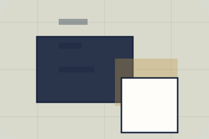

Guide
A useful entry point for visitors who need more context before they book an appearance.
Insights / 01
Insights opens as a clear personal brands decision hub: what Brand offers, who it helps, why it matters, and which route to take first.
The first screen combines positioning, proof, primary action, and fast internal navigation, so people can act immediately or compare the rest of the insights route with context.
Editorial author hero
Select the closest route and Brand keeps the next step, proof, and follow-up expectation aligned with authority and booking confidence.

Insights / 02
Articles gives researching visitors a practical route into guides, checklists, and comparison material without leaving the site structure.
Each resource behaves like a useful internal link, giving cold and warm visitors a way to learn, compare, and return to the action path.
View Resources
A useful entry point for visitors who need more context before they book an appearance.

A scannable comparison aid that makes research usable before the next decision.

A route back to support, services, or contact when the visitor is ready to act.
A useful entry point for visitors who need more context before they book an appearance.
Open resourceA scannable comparison aid that makes research usable before the next decision.
Open resourceA route back to support, services, or contact when the visitor is ready to act.
Open resourceInsights / 03
Essays gives researching visitors a practical route into guides, checklists, and comparison material without leaving the site structure.
Each resource behaves like a useful internal link, giving cold and warm visitors a way to learn, compare, and return to the action path.
Explore InsightsA useful entry point for visitors who need more context before they book an appearance.
A scannable comparison aid that makes research usable before the next decision.
A route back to support, services, or contact when the visitor is ready to act.
Insights / 04
Notes gives researching visitors a practical route into guides, checklists, and comparison material without leaving the site structure.
Each resource behaves like a useful internal link, giving cold and warm visitors a way to learn, compare, and return to the action path.
Explore InsightsA useful entry point for visitors who need more context before they book an appearance.
A scannable comparison aid that makes research usable before the next decision.
A route back to support, services, or contact when the visitor is ready to act.
Insights / 05
Themes gives researching visitors a practical route into guides, checklists, and comparison material without leaving the site structure.
Each resource behaves like a useful internal link, giving cold and warm visitors a way to learn, compare, and return to the action path.
Explore InsightsBrand structures themes around guide, checklist, and a clear next route so visitors can compare the block quickly before they book an appearance.
Book AppearanceInsights / 06
Opinions gives researching visitors a practical route into guides, checklists, and comparison material without leaving the site structure.
Each resource behaves like a useful internal link, giving cold and warm visitors a way to learn, compare, and return to the action path.
Explore Insights

A useful entry point for visitors who need more context before they book an appearance.
Insights / 07
Resources gives researching visitors a practical route into guides, checklists, and comparison material without leaving the site structure.
Each resource behaves like a useful internal link, giving cold and warm visitors a way to learn, compare, and return to the action path.
View ResourcesA useful entry point for visitors who need more context before they book an appearance.
A scannable comparison aid that makes research usable before the next decision.
A route back to support, services, or contact when the visitor is ready to act.
A useful entry point for visitors who need more context before they book an appearance.
Open resource
IndexA scannable comparison aid that makes research usable before the next decision.
Open resource
BriefA route back to support, services, or contact when the visitor is ready to act.
Open resourceInsights / 09
Read gives researching visitors a practical route into guides, checklists, and comparison material without leaving the site structure.
Each resource behaves like a useful internal link, giving cold and warm visitors a way to learn, compare, and return to the action path.
Explore InsightsA useful entry point for visitors who need more context before they book an appearance.
A scannable comparison aid that makes research usable before the next decision.
A route back to support, services, or contact when the visitor is ready to act.
Insights / 10
Brand closes the insights route with a clear action, a quick reminder of the value, and a low-friction way to book an appearance.
Visitors who are ready can use the primary action. Visitors who are still comparing can scan the section links, proof, and support routes before they book an appearance.
Book AppearanceThe final block keeps the choice simple: act now, compare one more proof route, or send enough detail for a focused response.
Book Appearanceauthority and booking confidence
A personal brand site with editorial essay rhythm, speaking/media cards, newsletter conversion, and booking clarity. Insights ends with a direct path to book an appearance, plus enough context for visitors who still need to compare.

Book AppearanceInformation is provided for planning and should be reviewed for the final client, location, and operating rules.